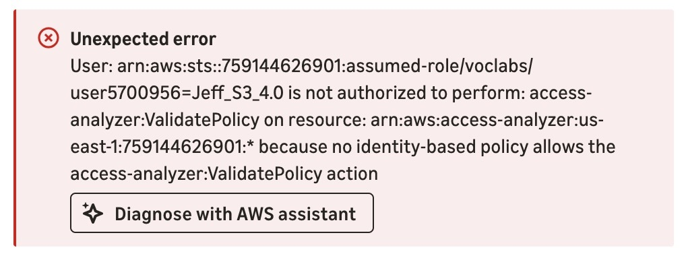

Final Project Groups: S3 Buckets
If you are bumping up against the fact that
- Having an S3 bucket shared across groupmates is tricky (relative to, a personal bucket or a totally-publicly-accessible bucket), and
- It is made even tricker by AWS’s restrictions on creating IAM roles for students with $50 AWS Academy accounts…
You are not alone! This writeup will address how to create and share data among members of a final project group.
(1) Creating a Publicly-Accessible Bucket
(1.1) The Bucket-Creation Wizard
Before even processing your chosen dataset, we recommend that you ingest it into a publicly-accessible S3 bucket that all members of the group can use from now until the end of the semester.
To create this publicly-accessible bucket in the first place, you’ll need to uncheck the “Block all public access” checkbox during the bucket creation wizard:

Then you will need to acknowledge their warning that… publicly-accessible buckets are publicly-accessible:

Keep in mind, also, that the bucket name needs to be globally unique: in the same way that domain names like https://google.com can already be taken (so that you can’t go register google.com), S3 bucket URIs like s3://my-cool-bucket can also be taken, so that you’ll need to make sure that your S3 bucket name is unique.
(1.2) Updating the Bucket’s Access Policy
Once the bucket has been created, you can navigate to the page for a bucket you’ve created in the AWS Console, click the “Permissions” tab then click the “Edit” button within the Bucket Policy panel, and paste the following code in as the bucket’s new access policy:
{
"Version": "2012-10-17",
"Statement": [
{
"Sid": "PublicReadGetObject",
"Effect": "Allow",
"Principal": "*",
"Action": "s3:GetObject",
"Resource": "arn:aws:s3:::dsan6000-hrsl/*"
},
{
"Sid": "PublicListBucket",
"Effect": "Allow",
"Principal": "*",
"Action": "s3:ListBucket",
"Resource": "arn:aws:s3:::dsan6000-hrsl"
}
]
}Please note that:
- This is the policy for the
dsan6000-hrslbucket used for HW6, so, everywhere you seedsan6000-hrslthere, please change it to the name of your bucket. And, - You will see a red-background error message at the bottom of the edit policy page that looks as follows:

This is actually completely ok, and expected! It is just saying that (for whatever reason) the $50 student AWS accounts block the ability to click a “Validate Policy” button. But, you will still be able to click the “Save Changes” button at the bottom of this page.

Files added to your bucket will now be accessible to all, including the members of your group! As a final “sanity check”, you can click the “ Upload” button near the bottom of the bucket’s page in the AWS Console, then upload a test file like this hello.txt file ( to save it locally):

Once you have uploaded the file, you can click on the filename within the new bucket contents listing:

And, in the file details page that then opens, you should see an Object URL listing (in the bottom-right of this screenshot):

Copy that object URL (https://dsan6000-test-bucket.s3.us-east-1.amazonaws.com/hello.txt), in the case of the above screenshot, and have a group member try opening it in their browser (or just open it yourself within an Incognito/Private Browsing tab). If the contents are visible, this means that files within the bucket are indeed publicly-accessible!
(2) Ingesting Data Into a Publicly-Accessible Bucket
Now that you have a bucket with an access policy allowing public reading of its contents, the next step is to ingest data into the bucket! You already did this in HW2, but there you had less context around the goal of ensuring that data is tranferred directly from its source to the S3 bucket, rather than making a “stop” on your local hard drive.1
As an example, since a few students are using data from Hugging Face’s Datasets portal, let’s take a look at their mirror of Arctic Shift’s Reddit dataset.2 Since the full set of submissions alone is about 1.48 TB (and even larger if you include comments on those submissions), this is a great candidate for your Spark cluster run! But, for the earlier stage of just looking at a subset of the full data, to get a sense for its structure, here we will just extract the submissions from January 2026 into our new S3 bucket.
By scrolling through the above link, you will see that the data is split into 93 separate .parquet files: 000.parquet through 092.parquet. Clicking on the 000.parquet file within HF’s web-based browser here will show a preview, but what we’re interested in here is the “Copy download link” button within the dropdown menu that appears when you click “Download” in the upper-left. The copied link should look as follows:
https://huggingface.co/datasets/open-index/arctic/resolve/main/data/submissions/2026/01/000.parquetwhich reveals the “structure” of the links, that we can use to directly copy these .parquet files into our S3 bucket!
There are… even fancier ways of doing this, for e.g. automated ingestion of new data (like the “asset-aware” pipeline triggering we saw in Week 11), but for the sake of the scope of the project you can just use a loop in Python code (running on your “main” EC2 instance) to carry out this ingestion. Going back to the code you saw in HW2, you can use the boto3 library to achieve this.
I’ve added comments to the following slightly-more-complex version of the HW2 code so you can see how this works step-by-step (you may need to pip install the requests library if it hasn’t already been installed on your instance):
import boto3
import requests
s3 = boto3.client("s3")
url = "https://huggingface.co/datasets/open-index/arctic/resolve/main/data/submissions/2026/01/000.parquet"
with requests.get(url, stream=True, timeout=30) as req_obj:
# (1) Ask requests library to start the request and obtain the status code
# (e.g., 404 = Not found, 403 = Not authorized, 200 = Success)
req_obj.raise_for_status()
# (2) Tell the requests library that, if the source file's server automatically
# *compresses* the data it returns, you want to auto-decompress it
req_obj.raw.decode_content = True
# (3) Use the boto3 s3 client object to "upload" data directly from the URL to
# your S3 bucket (replace bucket-name and filename with your own values)
s3.upload_fileobj(req_obj.raw, "bucket-name", "filename")Once that code makes sense to you, and (ideally) once you’ve tested it with this one data file, you can e.g. wrap it in a loop to copy all 93 files comprising the January 2026 submissions!

Footnotes
Remember that, the goal in this class is to be able to work with files without ever downloading them to your local laptop, which will be impossible for most industry/research datasets!↩︎
Note that you will see a “→ Copy to bucket” button in the top-right of the Hugging Face interface… Please do not use this approach for the DSAN 6000 project, since it will look confusingly similar to an S3 bucket hosted on AWS, but is actually a different setup: Hugging Face has their own separate bucket-hosting framework, where you can access datasets in a similar way (to add to the confusion, HF even allows you to cache the HF bucket contents within an AWS region, which you’ll see if you click that button). But, this framework is unfortunately not the same as S3’s system, and uses URIs with a different prefix like
hf://my-huggingface-bucket. Since there is no “obvious” prior guarantee that HF’s format will be compatible with the AWS technologies we’ve used in this course, we prefer therefore that you use AWS-hosted S3 buckets (accessible via thes3://prefix in general and thes3a://prefix when using Spark), though we’re happy to make exceptions upon request!↩︎